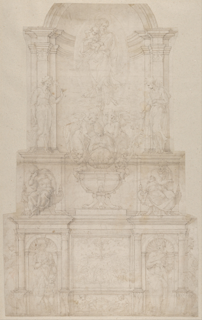

-
This famous sculpture by Michelangelo was created for a side chapel at Old St. Peter’s Basilica in Rome, Italy and is known for having launched Michelangelo’s career. It is also the only work in which Michelangelo has signed his name.
Pieta depicts the Virgin Mary holding her son Jesus after she removed his lifeless body from the cross. Some critics have claimed that Michelangelo made a grave mistake making Mary’s body significantly larger than Jesus’, however, it is believed that this was intentional on Michelangelo’s part since the Virgin Mary would not have been able to hold Jesus as gracefully had she been smaller than him. -
'David' is one of Michelangelo’s most famous works. Originally, the piece was to be completed by two other artists who had turned down the enormous piece of marble since they believed it to have too many imperfections, and therefore would not be stable for the 14 foot statue. After the block of marble sat for 25 years, Michelangelo, who was 26 at the time, was asked to complete the project. After 2 years of getting little to no sleep, hardly eating, and working tirelessly, Michelangelo created the remarkable 'David'.
-
Madonna of Bruges is meant to represent the Virgin Mary and her son Jesus. Many similar sculptures before Madonna of Bruges depict the Madonna smiling gracefully at the child, however, in Michelangelo’s interpretation, he created the Madonna looking away from the child with a stoic expression. It is believed that this is meant to represent Mary’s acceptance of the fate of her son Jesus. It is also believed that the child’s upright posture, and minimal support from his mother is meant to portray that he was born to be a leader. The Madonna of Bruges was the only piece of work by Michelangelo to have left Italy in his lifetime.
-
 Before his death, Pope Julius II made a plan to have a tomb constructed for himself and hired Michelangelo to design the structure in the new Saint Peter's Basilica. It is said to have cost 10,000 Ducats (roughly 1.5 million USD) and would take 5 years to complete. The tomb was designed to have a 3 story freestanding monument, and include nearly 47 marble sculptures. Michelangelo’s project, however, was interrupted by other works such as the Sistine Chapel. Following the death of Pope Julius II, Michelangelo agreed to create a revised, simplified version of the tomb. This image is the first, original design of the tomb by Michelangelo.
-
The Sistine Chapel ceiling, another renowned endeavour by Michelangelo, took 4 years to complete and measures just over 134 x 43 ft with numerous fresco paintings that cover the ceiling. Originally, Michelangelo was tasked with painting the ceiling with the 12 apostles, however, Michelangelo himself suggested he rather paint the scenes from the Old Testament. The very center of the ceiling illustrates scenes such as the 3 stories of Noah, the creation and downfall of Adam & Eve, and the creation of Earth. Today, the Sistine Chapel is visited by millions every year and contains some of the most protected paintings in the entire world.
-
The center of the Sistine Chapel's ceiling depicts nine different scenes from the Book of Genesis in the Bible. As seen here, Noah is in the background strenously tilling the soil to grow vines after the flood. Contrastingly, he is also shown in the foreground fallen asleep after consuming too much wine, and accidentally exposing himself. To the right of the unconscious Noah are his three sons, all of which are mocking his drunken, exposed body. The purpose of this work is also to demonstrate how humanity can be flawed, and brought back to spirituality.
-
 The Sistine Chapel located in Rome features numerous paintings created by various different artists from the time period. However, the magnificent ceiling features works by Michelangelo. The center of the ceiling depicts the nine different scenes from the Book of Genesis in the Bible. The Creation of Adam illustrates God giving life to Adam, the first man. This piece, specifically the hands touching, have become an iconic symbol of humanity. On the right, we see God being held by several angels while he reaches out to Adam to initiate the beginning of the human race.
The Sistine Chapel located in Rome features numerous paintings created by various different artists from the time period. However, the magnificent ceiling features works by Michelangelo. The center of the ceiling depicts the nine different scenes from the Book of Genesis in the Bible. The Creation of Adam illustrates God giving life to Adam, the first man. This piece, specifically the hands touching, have become an iconic symbol of humanity. On the right, we see God being held by several angels while he reaches out to Adam to initiate the beginning of the human race.
-
 The Delphic Sibyl is one of the many paintings located on the Sistine Chapel's ceiling. She was a woman who was a prophet associated with early religious practices in Ancient Greece. In Michelangelo’s rendition of the Delphic Sibyl, we see Delphica listening to her attendants read to her as she suddenly turns towards the Judith scene in awe as her cloak and hair blown by The Holy Spirit.
The Delphic Sibyl is one of the many paintings located on the Sistine Chapel's ceiling. She was a woman who was a prophet associated with early religious practices in Ancient Greece. In Michelangelo’s rendition of the Delphic Sibyl, we see Delphica listening to her attendants read to her as she suddenly turns towards the Judith scene in awe as her cloak and hair blown by The Holy Spirit.